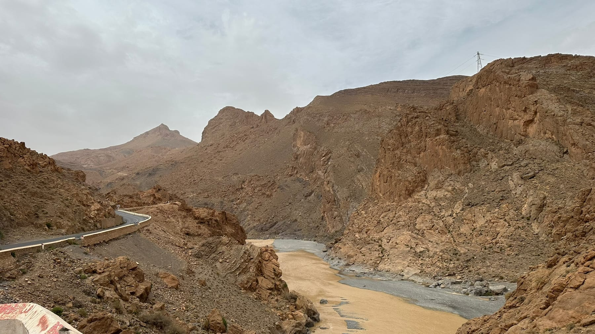
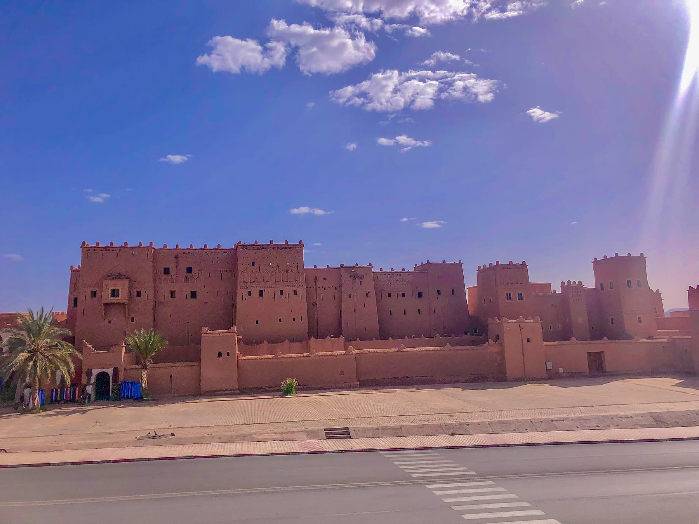
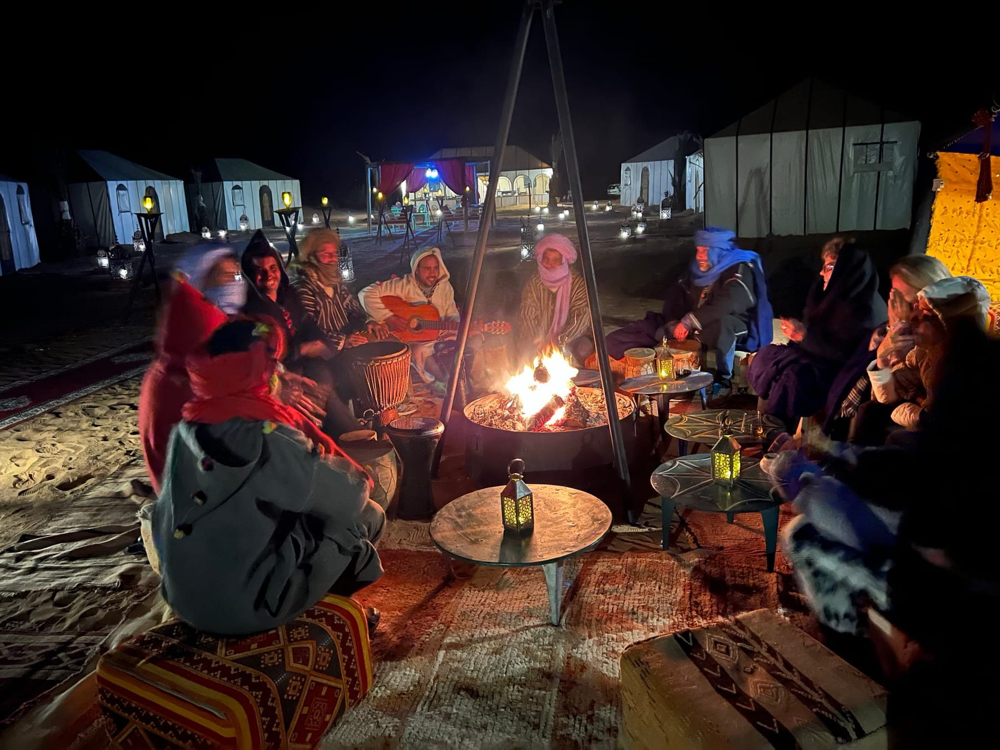
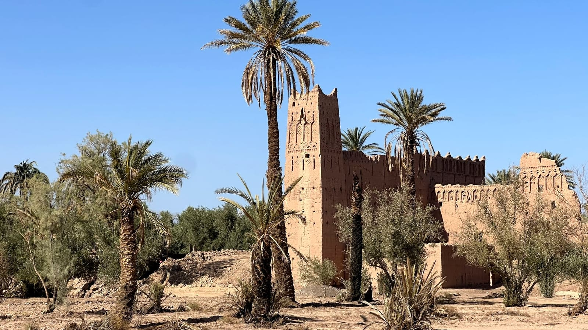
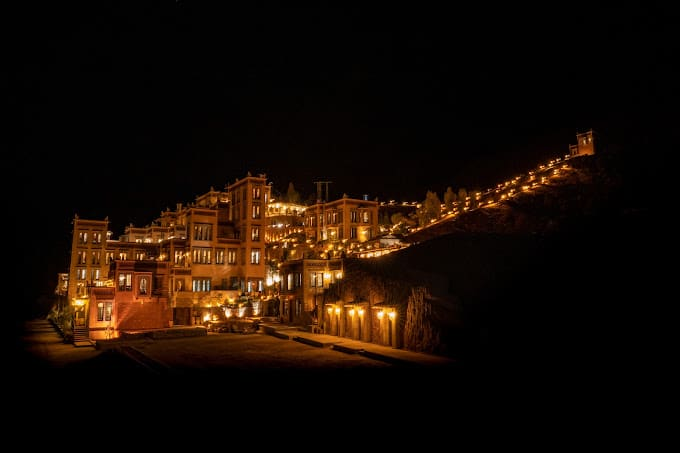

The short answer: The closest airport to Merzouga and the Erg Chebbi dunes is Errachidia (ERH), Moulay Ali Cherif Airport, about 130 km away, or roughly 2 hours by road via Erfoud. Ouarzazate (OZZ) is much further at about 360–370 km (6 to 6.5 hours' driving), but it puts Aït Benhaddou, Skoura and the Dades and Todra gorges on your route. Neither airport has nonstop flights from North America, the UK or Australia, so most travelers connect through Casablanca on Royal Air Maroc. From Marrakech, Ryanair flies to Errachidia, but there is no flight to Ouarzazate.
Most travelers reach the Sahara the classic way: a two-day drive from Marrakech over the High Atlas, or a long day from Fes through the Middle Atlas. Both are beautiful journeys, and for many people the drive is part of the experience. But if your time is short, or you've already seen Morocco's imperial cities, there's a faster option: fly to one of the two small airports on the edge of the desert and start your trip only a couple of hours from the dunes.
This guide explains which airport to choose, what flights actually exist (and which don't), and how we build private Sahara itineraries around arrivals at Errachidia and Ouarzazate. Flight information was checked on 20 November 2026. Small regional routes change often, sometimes from one season to the next, so always confirm current schedules with the airline before you book.
Merzouga, Erg Chebbi and the Sahara: What's Where
Three names often get mixed up:
- The Sahara is the vast desert covering much of North Africa. In Morocco, it begins south and east of the Atlas Mountains.
- Erg Chebbi is a specific sea of sand dunes in southeastern Morocco, about 22 km long, with dunes up to around 150 metres high. It's the classic golden-dune landscape most people picture.
- Merzouga is the village at the western edge of Erg Chebbi, and the base for camel treks and desert camps.
Errachidia is the regional capital, about 130 km north of Merzouga in the Ziz Valley. Ouarzazate lies much further west, on the other side of the Dades and Todra valleys, at the start of the road that crosses the High Atlas to Marrakech. If you want to understand why the dunes are where they are, our article on how the Atlas Mountains created the Merzouga desert explains it.
Flying to Errachidia (ERH)
Errachidia's airport is officially Moulay Ali Cherif Airport (IATA code ERH). It's small and quiet, with a handful of flights a week rather than a day, which is exactly why it's so convenient: arrival is quick, and your driver can be waiting just outside.
Current nonstop routes to Errachidia
| From | Airline | Approx. flights | Flight time | Notes |
|---|---|---|---|---|
| Casablanca (CMN) | Royal Air Maroc | About 29 a month | ~1h15 | The main connection for international travelers |
| Rabat (RBA) | Royal Air Maroc | About 8 a month | ~1h35 | Domestic |
| Marrakech (RAK) | Ryanair | About 9 a month | ~1h | Domestic. Booked separately from long-haul flights |
| Paris Orly (ORY) | Transavia | About 4 a month | ~3h15 | Seasonal, roughly November to March |
Source: route data from FlightConnections (a third-party flight database), checked 20 November 2026. Monthly figures are approximate, and they vary by season. Book through the airlines: Royal Air Maroc, Ryanair and Transavia.
What this means in practice
- From North America, the UK or Australia there are no nonstop flights. The practical route is a Royal Air Maroc connection through Casablanca, which can be booked on a single ticket. With roughly one Casablanca flight a day, check whether your long-haul arrival connects the same day. If not, plan a night in Casablanca.
- From Marrakech, Ryanair's flight is the fastest way to swap the city for the dunes. It operates only a few times a week, though, on a separate ticket with Ryanair's own baggage rules, so leave a generous buffer if you're connecting from another flight.
- From France, Transavia's seasonal Paris Orly flight is the only nonstop link to Europe.
Royal Air Maroc's booking pages show fares to Errachidia from many European cities, but these generally involve a connection in Casablanca. Don't read them as nonstop.

Flying to Ouarzazate (OZZ)
Ouarzazate Airport (IATA code OZZ) serves the "gateway to the desert", the film town known for its studios and the nearby UNESCO-listed ksar of Aït Benhaddou.
Current nonstop routes to Ouarzazate
| From | Airline | Approx. flights | Flight time | Notes |
|---|---|---|---|---|
| Casablanca (CMN) | Royal Air Maroc | About 20 a month | ~1h | The main connection for international travelers |
| Zagora (OZG) | Royal Air Maroc | About 9 a month | ~50m | Domestic |
| Paris Orly (ORY) | Transavia | About 14 a month | ~3h20 | Listed as year-round |
| Barcelona (BCN) | Ryanair | About 9 a month | ~2h20 | Listed as year-round |
| Marseille (MRS) | Ryanair | About 9 a month | ~2h40 | Listed as year-round |
Source: route data from FlightConnections, checked 20 November 2026. Figures are approximate and change by season, so confirm with the airline.
There is no flight between Marrakech and Ouarzazate. The two cities are linked by road over the Tizi n'Tichka pass, about 200 km or roughly 4 hours' drive, which is the route our Marrakech desert tours follow anyway.
Is Ouarzazate a practical way to reach Merzouga? Yes, if you want to see the kasbah route along the way. The drive to the dunes is about 360–370 km and 6 to 6.5 hours without stops, which is best split with a night in the Dades Valley. Ouarzazate is less practical if your only goal is to reach the dunes as fast as possible.

Errachidia vs. Ouarzazate at a Glance
| Errachidia (ERH) | Ouarzazate (OZZ) | |
|---|---|---|
| Distance to Merzouga | ~130 km | ~360–370 km |
| Driving time to the dunes | ~2 hours | ~6–6.5 hours (best split over two days) |
| Flights from Casablanca | Yes, Royal Air Maroc | Yes, Royal Air Maroc |
| Flights from Marrakech | Yes, Ryanair (a few a week) | No |
| Nonstop to Europe | Paris Orly, seasonal (Transavia) | Paris Orly (Transavia), Barcelona and Marseille (Ryanair) |
| Sightseeing on the way | Ziz Valley, Erfoud, Rissani | Aït Benhaddou, Skoura, Valley of Roses, Dades and Todra gorges |
| Best for | Maximum time in the dunes, short trips | A fuller desert-and-kasbah journey |
Our honest summary: choose Errachidia if the dunes are the point of the trip and you want to be at camp by sunset on the day you land. Choose Ouarzazate if you'd like the journey to be part of the trip and you have at least four days.
The Alternatives: Marrakech, Fes and Casablanca
| Airport | Road to Merzouga | When it makes sense |
|---|---|---|
| Fes–Saïss (FEZ) | ~470 km, ~6h30 through the Middle Atlas | Combining the desert with Fes, Meknes or Chefchaouen |
| Marrakech Menara (RAK) | ~550 km, usually split over two days | Most international connections, and the classic Atlas route |
| Casablanca Mohammed V (CMN) | Too far to drive in one go | Nonstop arrival from North America, then a connecting flight to ERH or OZZ |
If Morocco's cities are also on your list, flying into Marrakech or Fes and driving to the desert is often the better overall plan. A one-way route between the two crosses the Sahara with no backtracking. See our 4-day Marrakech to Fes desert tour and 3-day round trip from Fes, or our guide to choosing a Marrakech to Merzouga tour. The regional airports come into their own when the desert is the main event, or when you want to add it to a trip without three extra days on the road.
Five Private Itineraries Built Around Your Flights
These are the routes we suggest most often to travelers flying into the desert airports. Each one is private, with your own driver-guide and vehicle, and each can be adjusted around your actual flight times.
Itinerary A: Errachidia, 3 Days / 2 Nights
Best for: travelers short on time who want the dunes without long drives. Overnight: 2 nights at a desert camp in Erg Chebbi.
- Day 1, Errachidia to Merzouga (~130 km, ~2h of driving): Private pickup at the airport. Drive south through the Ziz Valley, stopping at the palm-oasis viewpoints, then on to Erfoud, known for its fossil workshops. Continue to Merzouga for a sunset camel ride (or 4x4 transfer) into the dunes, then dinner and a night at camp.
- Day 2, the desert: Sunrise from the dunes. A 4x4 excursion around Erg Chebbi: a nomad family's tent, Gnawa music in Khamlia and, in wetter months, the seasonal flamingo lake. Afternoon at leisure and a second night at camp.
- Day 3, Merzouga to Errachidia (~130 km, ~2h): A slow breakfast, a stop in Rissani's market town, then a private transfer to your flight.
Flight timing: to reach the dunes for sunset on Day 1, you'll want to land by early to mid-afternoon. With a later arrival, we can arrange a night in a hotel near the dunes and start the desert experience the next morning. On Day 3, a midday or afternoon departure leaves time for a relaxed morning.
Itinerary B: Errachidia, 4 Days / 3 Nights
Best for: couples and families who want a relaxed pace and more time in the desert. Overnight: 1 night in a kasbah-style hotel near the dunes, then 2 nights at a luxury desert camp (or the reverse).
- Day 1, Errachidia to Merzouga: Through the Ziz Valley and Erfoud to a kasbah-style hotel at the foot of the dunes. Walk up the nearest dune for sunset.
- Day 2, the Merzouga region: A 4x4 day around Erg Chebbi: nomadic families, Khamlia's Gnawa musicians, the old mines and black hamada of the desert edge. In the late afternoon, a camel ride to your camp.
- Day 3, a full day among the dunes: Sunrise, a slow morning, optional sandboarding or a longer camel trek, and a second night under the stars.
- Day 4, back to Errachidia: Via Rissani and the Ziz Valley to the airport.

Itinerary C: Ouarzazate, 4 Days / 3 Nights
Best for: travelers who want the kasbah route and the dunes in a short trip. Overnight: Dades Valley, desert camp, Dades Valley.
- Day 1, Ouarzazate, Aït Benhaddou and the Dades Valley (~175 km, ~3h30 of driving): Private airport pickup. A short drive to Aït Benhaddou to explore the ksar, then east through Skoura and the Valley of Roses to a hotel in the Dades Valley.
- Day 2, through the Todra Gorge to Merzouga (~230 km, ~4h30): Walk between the towering walls of the Todra Gorge near Tinghir, then continue via Erfoud to Merzouga for a sunset camel ride and a night at camp.
- Day 3, Merzouga back to the Dades Valley (~230 km, ~4h30): Sunrise over the dunes, then return west with time for lunch and the Dades Gorge's switchback road.
- Day 4, Dades Valley to Ouarzazate (~115 km, ~2h): A short morning drive back to the airport.
Why it works: it shows you far more of southern Morocco than an Errachidia trip, and no single day is longer than about four and a half hours' driving before stops. The trade-off is just one night in the desert. For a fuller account of this landscape, see our Dades Valley and Todra Gorge road-trip guide.
Itinerary D: Ouarzazate, 5 Days / 4 Nights
Best for: slower travelers and photographers. Overnight: Skoura, Dades Valley, two nights at a desert camp.
- Day 1, Ouarzazate, Aït Benhaddou and Skoura: Airport pickup and Aït Benhaddou, then a kasbah hotel among the palm groves of the Skoura Oasis.
- Day 2, Skoura, the Valley of Roses and the Dades Valley: A gentle day through rose-farming villages to the Dades Valley, with time to walk in the gorge.
- Day 3, Todra Gorge to Merzouga: The gorge in the morning light, then the dunes by sunset.
- Day 4, a full day in the desert: 4x4 exploration, Khamlia's Gnawa music, and a second night at camp.
- Day 5, departure: The drive from Merzouga back to Ouarzazate is long, at about 360–370 km and 6 to 6.5 hours, so it only suits an evening flight. Two better options are a sixth day with an overnight in the Dades Valley, or ending the trip at Errachidia, about 2 hours away (see Itinerary E).

Itinerary E: One Way Between Errachidia and Ouarzazate
Flying into one desert airport and out of the other is the most efficient way to see the whole region. It's entirely practical, as long as flights work on your dates.
Errachidia to Ouarzazate, 5 days / 4 nights:
- Day 1: Land at Errachidia, then drive through the Ziz Valley to Merzouga for a camel ride and a night at camp (~130 km, ~2h).
- Day 2: A full day in the desert, with a second night at camp.
- Day 3: West through the Todra Gorge to the Dades Valley (~230 km, ~4h30).
- Day 4: The Valley of Roses and Skoura, then Aït Benhaddou, and a night in Ouarzazate or at Aït Benhaddou.
- Day 5: A short transfer to Ouarzazate airport.
The reverse direction works just as well: kasbahs first, dunes as the finale, then a short final transfer to Errachidia. It's often the better choice if your departure flight is early, because the last drive is only about 2 hours.
Things to check: both airports mainly connect to Casablanca, so you'll usually fly Casablanca to Errachidia and Ouarzazate to Casablanca (or the reverse) on Royal Air Maroc. Confirm that both flights operate on your chosen days before fixing the itinerary. A one-way private journey can also cost a little more, because the vehicle and driver need to return to base.
Driving Distances and Journey Times
| Route | Distance | Driving time |
|---|---|---|
| Errachidia airport → Merzouga | ~130 km | ~2h |
| Erfoud → Merzouga | ~50–55 km | ~45 min |
| Ouarzazate → Aït Benhaddou | ~30 km | ~40 min |
| Ouarzazate → Dades Valley | ~115 km | ~2h |
| Dades Valley → Merzouga (via Todra Gorge) | ~230 km | ~4h30 |
| Ouarzazate → Merzouga (direct) | ~360–370 km | ~6–6.5h |
| Marrakech → Ouarzazate (Tizi n'Tichka) | ~200 km | ~4h |
| Fes → Merzouga | ~470 km | ~6h30 |
Driving time only. Real journeys take longer, because photo stops, lunch and sightseeing add one to three hours on scenic days.
When to Go
The best months for the Sahara are March to May and late September to November, with warm days and comfortable nights. Winter (December to February) brings clear skies and sunny days, but desert nights can approach freezing. Summer (June to August) is very hot in the middle of the day, so camel rides are timed for sunrise and sunset. See our month-by-month guide to the best time to visit the Sahara and our Morocco in winter guide. Remember too that some routes, such as Transavia's Paris–Errachidia flight, run only in certain seasons.
Desert Camps and Where to Stay
The camp makes or breaks a Sahara trip, and the standard varies enormously. On a private trip we match the camp to you, and a luxury camp typically offers:
- a private tent with a proper bed, and an en-suite bathroom with a hot shower;
- dinner by lantern light, and music around the fire;
- heating or heavy blankets for winter nights.
For travelers who want the highest comfort at Merzouga, we often recommend Tiziri Camp, a luxury camp with private en-suite tents in the Erg Chebbi dunes. On the Ouarzazate side, kasbah hotels in Skoura and boutique hotels in the Dades Valley, such as Eden Boutique Hotel and Spa, make comfortable overnight stops. See our luxury Morocco guide and what to expect at a desert camp.

What to Expect From a Private Sahara Trip
- Your own driver-guide and vehicle, met at the airport and with you throughout. No shared minibus and no fixed group schedule.
- A route paced around your flights, not the other way round.
- Accommodation chosen for you, from kasbah hotels to luxury camps, with upgrades available.
- Flexibility: skip the camel ride and reach camp by 4x4, add a second desert night, or stop wherever you like.
For more on how this works day to day, read our guide to hiring a private driver in Morocco.
Booking and Flight-Planning Advice
- Check flights before fixing dates. Errachidia and Ouarzazate have a few flights a week on most routes, not several a day. Find the days that work, then build the trip around them.
- Prefer single tickets for connections. A Royal Air Maroc ticket through Casablanca protects the connection. Separate low-cost tickets don't.
- Leave a buffer. With so few flights, a missed connection can mean a full day's delay. A night in Casablanca or Marrakech on arrival is cheap insurance.
- Mind the luggage. Low-cost carriers have strict baggage rules. Soft bags are also easier in desert-camp vehicles.
- Consider an open jaw. Flying into one desert airport and out of the other, or out of Marrakech or Fes, avoids long drives back.
- Book early for peak periods. Spring, autumn, Christmas and New Year fill both flights and the best camps months ahead.
Plan Your Sahara Trip Around Your Flights
Every route above is a starting point. Tell us which airport you're flying into (or considering), your dates, how many of you are traveling and the comfort level you prefer. We'll suggest the most practical private itinerary, including honestly whether a regional flight or a drive from Marrakech or Fes suits you better. Request your personalized itinerary, browse our Signature Journeys, or explore our tailor-made trips.